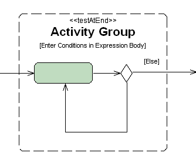

The IDE's Activity Group functionality lets you take advantage of UML 2.0. An Activity Group demarks a loop in the flow of an activity. For example, an Activity Group calls out an iteration that already exists in the flow. The IDE's UML Modeling feature offers three GroupKinds:
